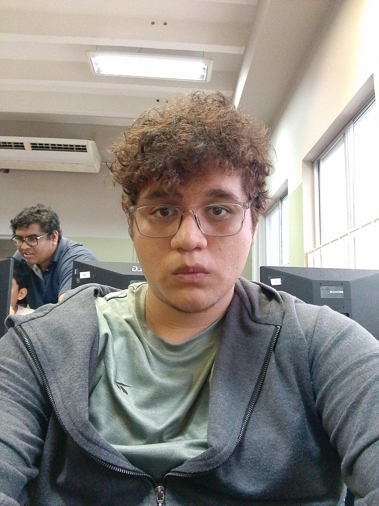

Curriculum viate

Gordillo Loor Luis Fernando
Domicilio: Coop balerio estacio bloque 8 manzana 3197 solar 18
Celular: 0998448578 - 0969167525
Informacion personal
- Fecha de nacimiento: 17 de octubre 2001
- Nacionalidad: Ecuatoriano
- Estado Civil: Soltero
- Cedula: 0951920719
- Mail: luis18gordillo@gmail.com
Objetivo
Al convertirme en miembro de una empresa, puedo poner en práctica todos
mis conocimientos, lo que me da la oportunidad de alcanzar todas las metas
establecidas y me brinda la oportunidad de crecer en el ámbito laboral,
personal y del conocimiento para obtener experiencia y poder desenvolverme
en el ámbito laboral.
Estudios Realizados
- Bachillerato general unificado - Dr Teodoro Alvarado Olea colegio fiscal mixto
- Pedagogia en matematicas y fisica - Universidad de guayaquil (4to semestre)
- Desarrollo de software - Tecnologico Liceo Cristiano (4to semestre)